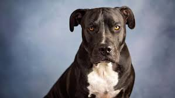
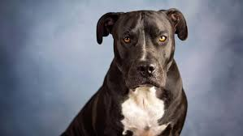

The dog derived from an ancient extinct Wolf with the modern grey wolf being the dog's nearest living relative. The dog was the first species to be domesticated by hunter gatherers over 15,000 years ago before the development of agriculture. Their long association with humans has led dogs to be uniquely adapted to human behaviour leadibg to a large number of domestic individuals and the ability to thrive on a starch-rich diet that would be inadequate for other candids.
Dog intelligence is the dog's ability to perceive information ad retain it as kowledge for applying to solve problems. Studies of dogs suggest that dogs can learn ny inference and have advances memory skills.
Dog behavior is the internally coordinated responses of the domestic dog (individuals or groups)to internal and external stimuli.
Dog communication is how dogs convey information to other dogs, understand messages from humans and translate the information that dogs are transmitting

 
